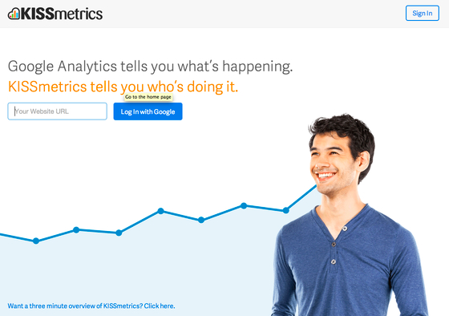
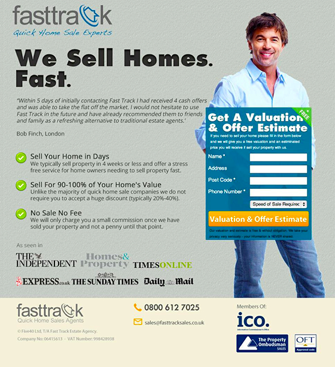

什麼是Landing Page（登陸頁面）？

在內文裡面他們重複了「你」兩次，並且清楚的描述了其所提供的服務內容：Google Analytics告訴你發生了什麼事，Kissmetrics告訴你為什麼會有這樣的結果，照片輔以一張人臉的笑容，朝向希望你閱讀的方向看去，同時給予背景許多留白的空間。在內文裡面他們重複了「你」兩次，並且清楚的描述了其所提供的服務內容：Google Analytics告訴你發生了什麼事，Kissmetrics告訴你為什麼會有這樣的結果，照片輔以一張人臉的笑容，朝向希望你閱讀的方向看去，同時給予背景許多留白的空間。

在這個登陸頁面，他們同樣用一個微笑的男子作為主要圖片。在Logo的下方指出自己的專業：quick home sale experts（快速幫你賣掉房子的專家），在主要的標題再次給予主要目標客群滿滿的信心，告訴他們，Fast Track能快速幫你把房子賣掉，再用列點的方式告訴你相關的細節內容，包括在幾天內既可以幫你把房子賣掉、讓你的銷售價格能保持90~100%的價值、沒有銷售抽成。如果你是一個急於脫手房屋的賣家，當看到這個Landing Page時候，會不會覺得交給Fast Track應該可以很安心，並且能很快把自己的房子賣掉？不過所有的結果都需要被測試！當談到強調幸福，對每一個人來說都是不一樣的，每個人都會在不同的東西中找到屬於自己的樂趣，所以你必須測試你的主要目標客群他們會對什麼樣的內容買帳。